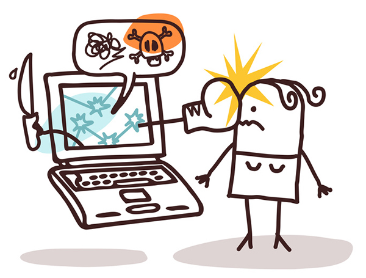

Kyberšikana je forma šikany, ktorá prebieha prostredníctvom internetu, mobilných telefónov a sociálnych sietí. Ide o úmyselné ubližovanie, ponižovanie alebo zastrašovanie inej osoby v online priestore. Môže sa diať na sociálnych sieťach, v chatovacích aplikáciách, online hrách alebo prostredníctvom e-mailov.
Kyberšikana je nebezpečná najmä preto, že sa deje nepretržite a obeť pred ňou nemá únik ani doma. Obsah sa navyše môže rýchlo šíriť medzi veľkým počtom ľudí a útočník môže byť anonymný. U obetí môže spôsobovať stres, strach, úzkosť a zhoršenie psychického zdravia.
